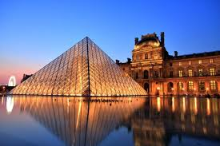
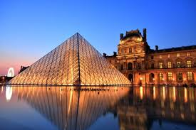
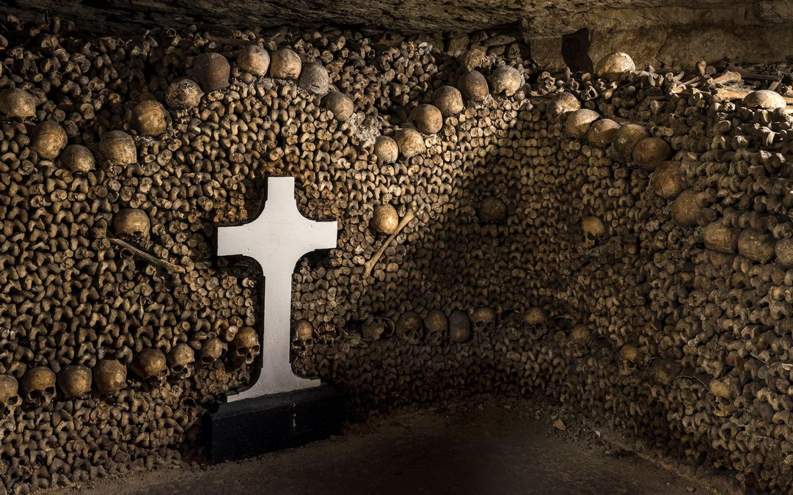
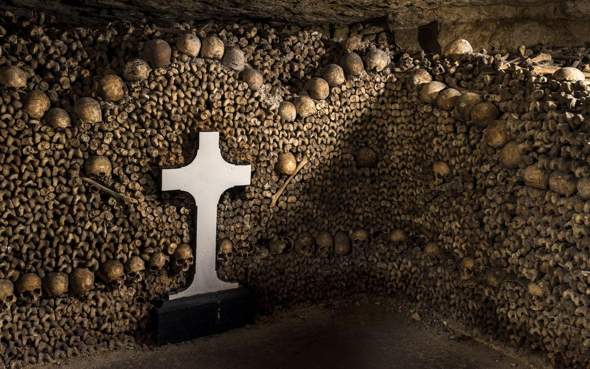
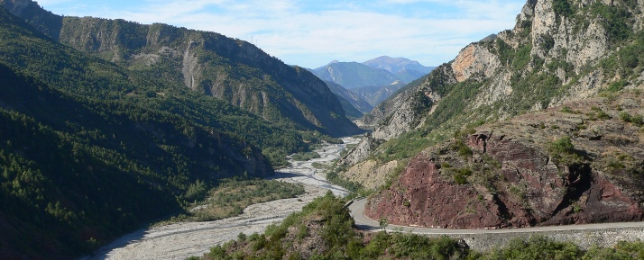
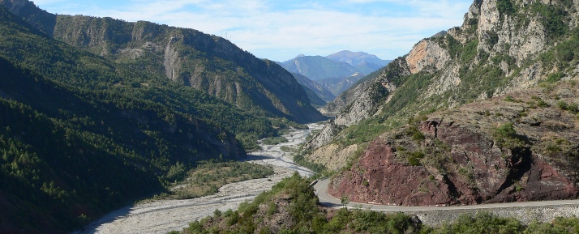
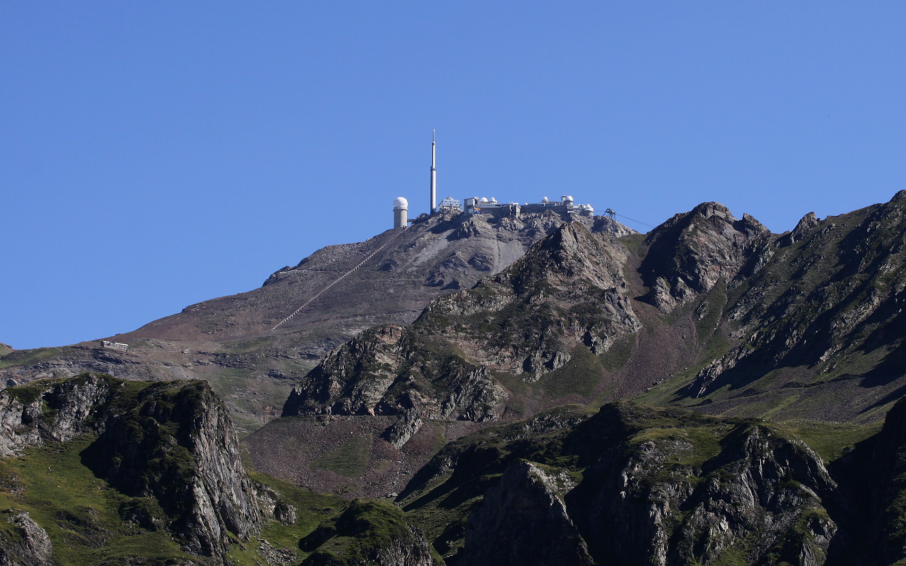
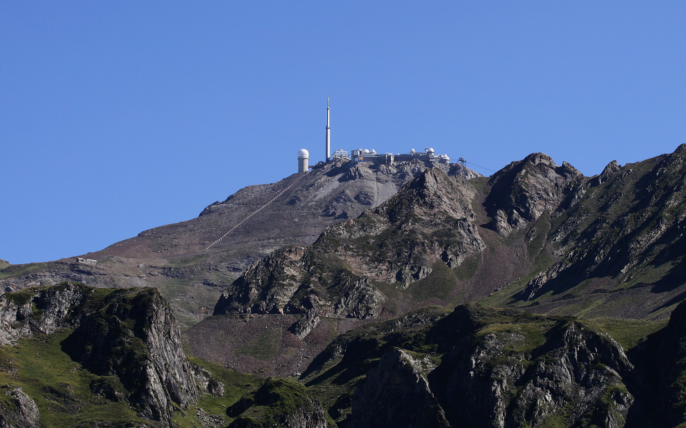

La France
La France touristique
Paris, capitale de la France, est une grande ville européenne et un centre mondial de l'art, de la mode, de la gastronomie et de la culture.
Son paysage urbain du XIXe siècle est traversé par de larges boulevards et la Seine.
Outre les monuments comme la tour Eiffel et la cathédrale gothique Notre-Dame du XIIe siècle,
la ville est réputée pour ses cafés et ses boutiques de luxe bordant la rue du Faubourg-Saint-Honoré"

 

 

"Le littoral français comprend au moins 18 000 kilomètres de côtesLe littoral est la bande de terre constituant la zone comprise entre une étendue maritime et la terre ferme, le continent, ou l'arrière-pays.
Son exacte définition est cependant difficile à déterminer compte tenu des différents concepts qui lui sont accordés."
"La France est un pays au multiple paysage La diversité de ses paysages. Des villes magnifiques, un littoral avec différentes mers, des lacs, de nombreux domaines skiables, de belles campagnes, des régions tropicales en outre mer… <> Rares sont les pays qui offrent un tel choix de destinations, avec des identités régionales fortes."
 

 
